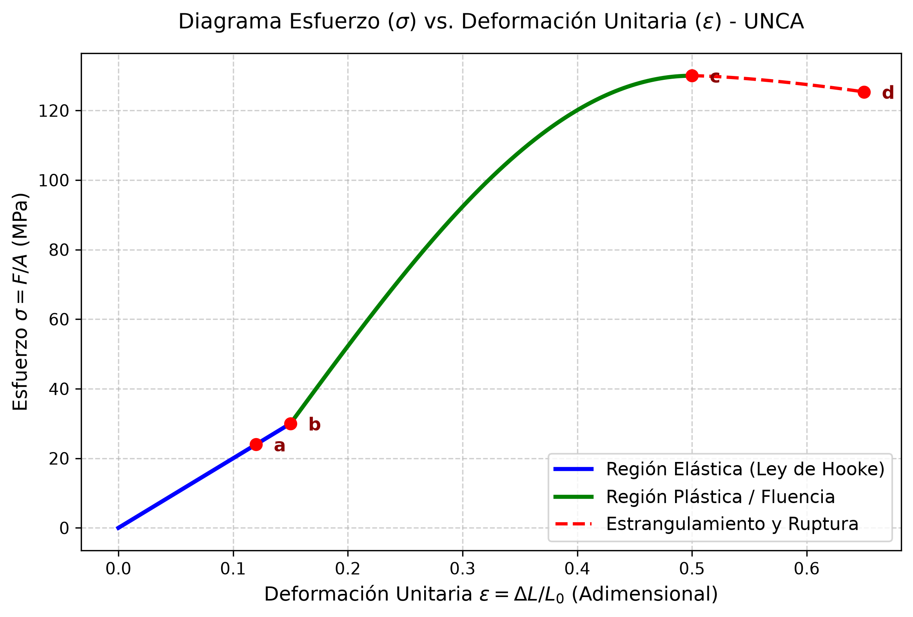
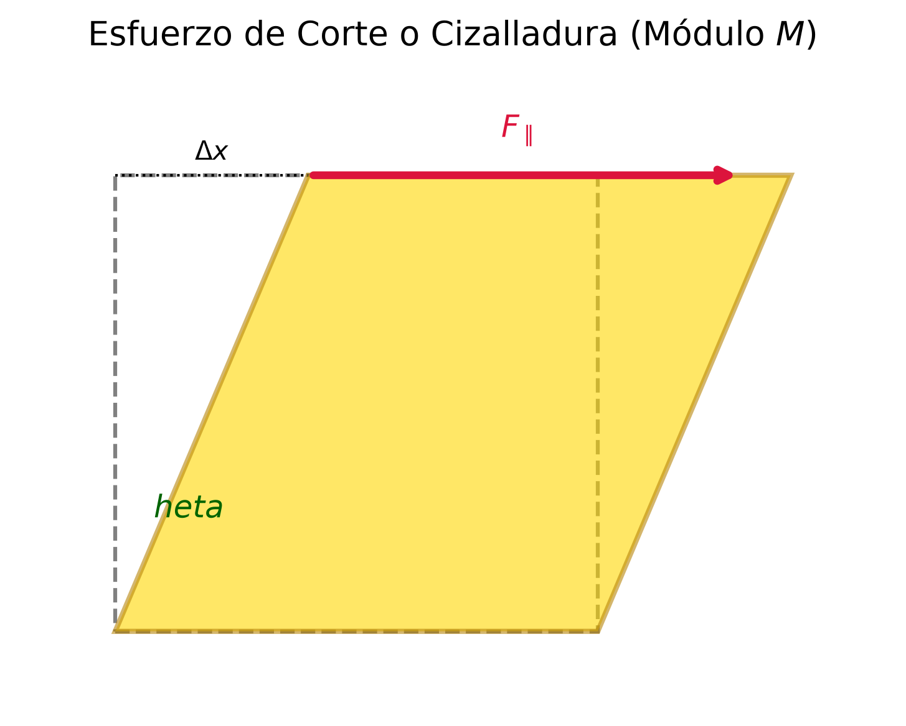
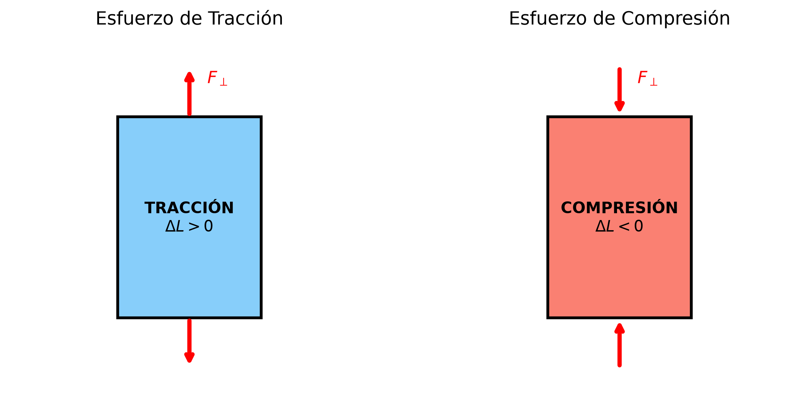

🧱 Tema 2.1: Elasticidad, Módulos y Ley de Hooke
Intuición y Propósito del Tema: La Mecánica de Materiales estudia cómo responden los cuerpos reales cuando se les aplican fuerzas externas. * En criollo: A diferencia del "cuerpo rígido ideal" que no cambia su forma jamás, los materiales reales se estiran, se aplastan, se tuercen o se comprimen. Dependiendo de la magnitud del esfuerzo y del material, el cuerpo puede volver a su forma original (comportamiento elástico) o quedar deformado para siempre (comportamiento plástico). * Eje Conceptual: Relacionar las fuerzas aplicadas por unidad de área (Esfuerzo) con la deformación relativa resultante (Deformación Unitaria). La constante de proporcionalidad entre ambas es el Módulo de Elasticidad (Young, Corte o Volumétrico), característico de cada material.
📌 Contenido de esta nota (Índice interactivo)
- 🧱 Tema 2.1: Elasticidad, Módulos y Ley de Hooke
- 1. Traductor de Lenguaje Físico y Notación
- Clasificación según la Cátedra (UNCA):
- 3. Definición: Esfuerzo, Deformación y Módulo
- 4. Módulos de Elasticidad y Tipos de Esfuerzo
- 5. Ley de Hooke y Diagrama Esfuerzo-Deformación
- 6. Análisis Dimensional y Cancelación de Unidades Paso a Paso
- ⚠️ 7. Trampas y Errores Típicos en Exámenes (UNCA)
- 📝 8. Ejercicios Resueltos Paso a Paso de Parcial
- 9. Conexión con el Siguiente Tema
- 🔗 Enlaces Relacionados
- Referencias
1. Traductor de Lenguaje Físico y Notación
| Símbolo Formal | Lectura Universitaria | Significado Físico / Intuición | Unidades SI | Unidades Fundamentales |
|---|---|---|---|---|
| \(\epsilon\) (o \(\sigma\)) | Esfuerzo / Tensión | Fuerza distribuida por unidad de área transversal que causa la deformación. | \(\text{N/m}^2 = \text{Pa}\) | \(\text{kg} \cdot \text{m}^{-1} \cdot \text{s}^{-2}\) |
| \(\delta\) (o \(\epsilon_u\)) | Deformación Unitaria | Cambio relativo de dimensión (cambio de longitud, ángulo o volumen sobre dimensión inicial). | Adimensional (\(1\)) | \(1\) (sin dimensiones) |
| \(Y\) | Módulo de Young | Resistencia de un sólido a cambiar su longitud ante tracción o compresión. | \(\text{N/m}^2 = \text{Pa}\) | \(\text{kg} \cdot \text{m}^{-1} \cdot \text{s}^{-2}\) |
| \(M\) (o \(G\)) | Módulo de Corte / Rigidez | Resistencia de un sólido al deslizamiento de sus capas paralelas (cizalla). | \(\text{N/m}^2 = \text{Pa}\) | \(\text{kg} \cdot \text{m}^{-1} \cdot \text{s}^{-2}\) |
| \(B\) | Módulo Volumétrico | Resistencia de un fluido o sólido a cambiar su volumen ante una presión uniforme. | \(\text{N/m}^2 = \text{Pa}\) | \(\text{kg} \cdot \text{m}^{-1} \cdot \text{s}^{-2}\) |
| \(k\) | Compresibilidad | Facilidad con la que una sustancia cambia de volumen bajo presión (\(k = 1/B\)). | \(\text{Pa}^{-1} = \text{m}^2/\text{N}\) | \(\text{kg}^{-1} \cdot \text{m} \cdot \text{s}^2\) |
| \(L_0\) | Longitud Inicial | Dimensión longitudinal original del cuerpo antes de aplicar la fuerza. | \(\text{m}\) | \(\text{m}\) |
| \(\Delta L\) | Alargamiento / Acortamiento | Variación absoluta de la longitud (\(\Delta L = L - L_0\)). | \(\text{m}\) | \(\text{m}\) |
| \(A\) | Área de Sección Transversal | Superficie sobre la cual actúa la fuerza externa (\(A_\perp\) o \(A_\parallel\)). | \(\text{m}^2\) | \(\text{m}^2\) |
| \(\theta\) | Ángulo de Cizalladura | Ángulo de distorsión angular en radianes debido al esfuerzo de corte. | \(\text{rad}\) | \(1\) (Adimensional) |
Clasificación según la Cátedra (UNCA):
- Cuerpo Elástico: Aquel que recupera sus dimensiones originales cuando cesa la acción de la fuerza deformadora. (Ejemplo: alambre de acero con cargas pequeñas, resorte helicoidal).
- Cuerpo Inelástico: Aquel que no recupera su forma original tras retirar el esfuerzo.
- Cuerpo Plástico: Aquel que experimenta una deformación permanente y no genera fuerzas internas de restitución para volver al estado inicial.
3. Definición: Esfuerzo, Deformación y Módulo
Para caracterizar el comportamiento de un material independientemente de sus dimensiones geométricas, la física define tres conceptos universales:
1. Esfuerzo (\(\epsilon\) o \(\sigma\))
Es la intensidad de la fuerza interna distribuida por unidad de área de la sección sobre la cual actúa[cite: 3]:
- Unidades en el SI: \(\frac{\text{N}}{\text{m}^2} = \text{Pascal} \, (\text{Pa})\)[cite: 3].
2. Deformación Unitaria (\(\delta\))
Es el cambio relativo en las dimensiones del cuerpo respecto a su dimensión inicial[cite: 3]:
- Propiedad clave: La deformación unitaria es un número adimensional (sin unidades)[cite: 3].
3. Módulo Elástico
Es la constante de proporcionalidad entre el esfuerzo aplicado y la deformación unitaria producida[cite: 3]. Mide la "rigidez" del material:
- Unidades en el SI: Al ser la deformación unitaria adimensional, el Módulo de Elasticidad tiene exactamente las mismas unidades que el esfuerzo (\(\text{N/m}^2\) o \(\text{Pa}\))[cite: 3].
4. Módulos de Elasticidad y Tipos de Esfuerzo
Se distinguen tres tipos fundamentales de alteración estructural de los sólidos[cite: 3]:
4.1 Tracción y Compresión (Módulo de Young \(Y\))
Se presenta cuando una fuerza perpendicular \(F_\perp\) actúa de forma uniforme sobre la sección transversal \(A\) de una barra o alambre de longitud inicial \(L_0\)[cite: 3].
- Tracción: La fuerza tiende a estirar el cuerpo (\(\Delta L > 0\))[cite: 3].
- Compresión: La fuerza tiende a aplastar el cuerpo (\(\Delta L < 0\))[cite: 3].
Fórmulas Formales:
-
Esfuerzo Longitudinal: $\(\epsilon = \frac{F_\perp}{A}\)$
-
Deformación Unitaria Longitudinal: $\(\delta = \frac{\Delta L}{L_0}\)$
-
Módulo de Young (\(Y\)): $\(Y = \frac{\frac{F_\perp}{A}}{\frac{\Delta L}{L_0}} = \frac{F_\perp \cdot L_0}{A \cdot \Delta L}\)$

4.2 Corte o Cizalladura (Módulo de Corte \(M\))
Ocurre cuando sobre un cuerpo actúa una fuerza paralela \(F_\parallel\) a una de sus caras de área \(A\), mientras que la cara opuesta se mantiene fija[cite: 3]. Esto provoca un desplazamiento lateral \(\Delta x\) entre planos paralelos y un distorsionamiento angular \(\theta\)[cite: 3].
Fórmulas Formales:
-
Esfuerzo de Corte: $\(\epsilon_{\text{corte}} = \frac{F_\parallel}{A}\)$
-
Deformación Unitaria de Corte: Para ángulos pequeños (\(\theta \ll 1\,\text{rad}\)), se cumple \(\tan\theta \approx \sin\theta \approx \theta\)[cite: 3]: $\(\delta_{\text{corte}} = \frac{\Delta x}{L} = \tan\theta \approx \theta \quad (\text{en radianes})\)$
-
Módulo de Corte o Rigidez (\(M\)): $\(M = \frac{\frac{F_\parallel}{A}}{\frac{\Delta x}{L}} = \frac{F_\parallel}{A \cdot \theta}\)$

4.3 Volumétrico y Presión Hydrostática (Módulo \(B\) y Compresibilidad \(k\))
Se produce cuando un cuerpo sumergido en un fluido recibe una fuerza perpendicular uniforme en toda su superficie externa[cite: 3]. La fuerza por unidad de área se denomina Presión (\(P = F_\perp / A\))[cite: 3].
Fórmulas Formales:
-
Esfuerzo Volumétrico (Presión): $\(P = \frac{F_\perp}{A}\)$
-
Deformación Unitaria Volumétrica: $\(\delta_V = \frac{\Delta V}{V_0}\)$
-
Módulo Volumétrico (\(B\)): $\(B = -\frac{\frac{F_\perp}{A}}{\frac{\Delta V}{V_0}} = -\frac{\Delta P}{\frac{\Delta V}{V_0}}\)$
Nota sobre el Signo Negativo (\(-\)): Se incluye explícitamente porque un aumento de presión (\(\Delta P > 0\)) siempre produce una disminución del volumen (\(\Delta V < 0\)), garantizando que el módulo \(B\) sea una cantidad estrictamente positiva[cite: 3].
-
Coeficiente de Compresibilidad (\(k\)): Es el recíproco o inverso multiplicativo del módulo volumétrico[cite: 3]: $\(k = \frac{1}{B} = -\frac{\frac{\Delta V}{V_0}}{\Delta P}\)$
5. Ley de Hooke y Diagrama Esfuerzo-Deformación
Formulación de la Ley de Hooke
Enunciada por Robert Hooke, establece que para deformaciones elásticas pequeñas, el esfuerzo es directamente proporcional a la deformación unitaria[cite: 3].
-
Forma General: $\(\text{Esfuerzo} \propto \text{Deformación Unitaria}\)$
-
Forma Escalar de la Fuerza Restauradora: $\(F = -k \cdot \Delta x\)$
- \(k\): Constante elástica del cuerpo o resorte (\(\text{N/m}\)).
- Signo negativo (\(-\)): Indica que la fuerza recuperadora es opuesta al sentido del desplazamiento \(\Delta x\)[cite: 3].
Diagrama Esfuerzo (\(\sigma\)) vs Deformación (\(\epsilon\))
Representa la respuesta mecánica completa de un material metálico (ductil) sometido a tracción progresiva[cite: 3]:

Puntos Críticos del Diagrama (Examen UNCA):
- Punto a (Límite de Proporcionalidad): Fin del tramo rectilíneo. Hasta aquí se cumple estrictamente la Ley de Hooke (\(\sigma = Y \cdot \epsilon\))[cite: 3].
- Punto b (Límite Elástico): Esfuerzo máximo que el material puede soportar sin sufrir deformaciones permanentes. Si se quita la carga antes de \(b\), el objeto recupera su longitud \(L_0\)[cite: 3].
- Límite de Cedencia / Fluencia (\(LC\)): Valor mínimo de esfuerzo a partir del cual el material "fluye" o se deforma plásticamente con muy poco incremento de carga[cite: 3]: $\(LC = \frac{F_{\min}}{A}\)$
- Punto c (Comportamiento Plástico / Deformación Permanente): Tramo no lineal por encima del límite elástico. Al retirar la fuerza en esta zona, el material conserva un estiramiento remanente[cite: 3].
- Límite de Resistencia a la Rotura (\(LRR\)): Esfuerzo máximo absoluto que puede soportar el material antes de colapsar[cite: 3]: $\(LRR = \frac{F_{\max}}{A}\)$
- Punto d (Punto de Ruptura): Instante en el que el material se fractura físicamente[cite: 3].
6. Análisis Dimensional y Cancelación de Unidades Paso a Paso
En la cátedra de la UNCA es obligatorio justificar la eliminación algebraica de magnitudes para validar el resultado final[cite: 2, 3].
Caso 1: Demostración de las Unidades del Módulo de Young (\(Y\))
Partiendo de la definición: $\(Y = \frac{\frac{F_\perp}{A}}{\frac{\Delta L}{L_0}}\)$
-
Expresión de Unidades en el Sistema Internacional (SI): $\([Y] = \frac{\frac{\text{N}}{\text{m}^2}}{\frac{\text{m}}{\text{m}}}\)$
-
Cancelación Estricta en la Deformación Unitaria: $\(\frac{\text{m}}{\text{m}} = \text{m}^{1-1} = \text{m}^0 = 1 \quad \implies \text{Adimensional}\)$
-
Reemplazo en la Fracción Principal: $\([Y] = \frac{\frac{\text{N}}{\text{m}^2}}{1} = \frac{\text{N}}{\text{m}^2} = \text{Pa}\)$
-
Descomposición a Unidades Fundamentales del SI (\(\text{kg}, \text{m}, \text{s}\)): Como \(1\,\text{N} = 1\,\text{kg} \cdot \text{m} \cdot \text{s}^{-2}\): $\([Y] = \frac{\text{kg} \cdot \text{m} \cdot \text{s}^{-2}}{\text{m}^2} = \text{kg} \cdot \text{m}^{1-2} \cdot \text{s}^{-2} = \text{kg} \cdot \text{m}^{-1} \cdot \text{s}^{-2}\)$
Caso 2: Unidades del Coeficiente de Compresibilidad (\(k\))
Descomposición fundamental: $\([k] = \frac{\text{m}^2}{\text{kg} \cdot \text{m} \cdot \text{s}^{-2}} = \text{kg}^{-1} \cdot \text{m}^{2-1} \cdot \text{s}^2 = \text{kg}^{-1} \cdot \text{m} \cdot \text{s}^2\)$
⚠️ 7. Trampas y Errores Típicos en Exámenes (UNCA)
⚠️ Trampa 1: Conversión Incompleta de Milímetros Cuadrados (\(\text{mm}^2\)) a Metros Cuadrados (\(\text{m}^2\))
Error común: Escribir \(15\,\text{mm}^2 = 15 \times 10^{-3}\,\text{m}^2\).
Por qué se invalida: El prefijo mili (\(10^{-3}\)) debe elevarse al cuadrado:
$\(1\,\text{mm} = 10^{-3}\,\text{m} \implies 1\,\text{mm}^2 = (10^{-3}\,\text{m})^2 = 10^{-6}\,\text{m}^2\)$
Regla Inviolable: \(15\,\text{mm}^2 = 15 \times 10^{-6}\,\text{m}^2\).⚠️ Trampa 2: Área de Corte en Punzonado de Placas vs. Área Transversal de Pernos
Error de cizalladura: Al calcular la fuerza para perforar una placa de espesor \(t\) con un punzón circular de diámetro \(d\), usar el área del círculo (\(A = \pi d^2 / 4\))[cite: 3].
Corrección: El corte de la placa ocurre en la superficie lateral del cilindro extraído[cite: 3]:
$\(A_{\text{lateral}} = \text{Perímetro} \times \text{Espesor} = (\pi \cdot d) \cdot t\)$⚠️ Trampa 3: Confundir Deformación Unitaria con Porcentaje de Deformación
Error: Reemplazar un alargamiento del \(0,125\%\) como \(\delta = 0,125\).
Corrección: El porcentaje incluye un factor \(100\). La deformación unitaria pura es[cite: 3]:
$\(\delta = \frac{0,125}{100} = 1,25 \times 10^{-3}\)$⚠️ Trampa 4: Omitir la Masa o Masa por Gravedad (\(F = m \cdot g\))
Error: Usar la masa \(M = 454\,\text{kg}\) directamente en la fórmula de esfuerzo \(\epsilon = F/A\).
Corrección: Convertir siempre la masa suspendida a Fuerza Peso (en Newtons)[cite: 3]:
$\(F = M \cdot g = 454\,\text{kg} \times 9,8\,\text{m/s}^2 = 4449,2\,\text{N}\)$
📝 8. Ejercicios Resueltos Paso a Paso de Parcial
Ejercicio 1 (Cálculo del Módulo de Young - Apunte Cátedra UNCA):
Una carga de \(M = 454\,\text{kg}\) se suspende de un alambre de acero de \(L_0 = 2,4\,\text{m}\) de longitud y \(A = 15\,\text{mm}^2\) de sección transversal.
Produce un alargamiento de \(\Delta L = 3\,\text{mm}\).
Calcular: a) El esfuerzo (\(\epsilon\)), b) La deformación unitaria (\(\delta\)), c) El Módulo de Young (\(Y\)).[cite: 3]
Desarrollo Paso a Paso (Ejercicio 1):
- Paso 1: Conversión de datos al SI
- \(F_\perp = M \cdot g = 454\,\text{kg} \times 9,8\,\frac{\text{m}}{\text{s}^2} = 4449,2\,\text{N}\)[cite: 3]
- \(A = 15\,\text{mm}^2 = 15 \times 10^{-6}\,\text{m}^2\)[cite: 3]
-
\(\Delta L = 3\,\text{mm} = 3 \times 10^{-3}\,\text{m}\)[cite: 3]
-
Paso 2: Cálculo del Esfuerzo (\(\epsilon\)) $\(\epsilon = \frac{F_\perp}{A} = \frac{4449,2\,\text{N}}{15 \times 10^{-6}\,\text{m}^2} = 2,966 \times 10^8\,\frac{\text{N}}{\text{m}^2} \approx 2,97 \times 10^8\,\text{Pa}\)$[cite: 3]
-
Paso 3: Cálculo de la Deformación Unitaria (\(\delta\)) $\(\delta = \frac{\Delta L}{L_0} = \frac{3 \times 10^{-3}\,\text{m}}{2,4\,\text{m}} = 1,25 \times 10^{-3} \quad (0,125\%)\)$[cite: 3]
-
Paso 4: Cálculo del Módulo de Young (\(Y\)) $\(Y = \frac{\epsilon}{\delta} = \frac{2,97 \times 10^8\,\frac{\text{N}}{\text{m}^2}}{1,25 \times 10^{-3}} = 2,376 \times 10^{11}\,\frac{\text{N}}{\text{m}^2} \approx 2,38 \times 10^{11}\,\text{Pa}\)$[cite: 3]
Ejercicio 2 (Esfuerzo de Corte y Punzonado - Apunte Cátedra UNCA):
El esfuerzo de corte máximo para romper el acero es de \(4,00 \times 10^8\,\text{N/m}^2\).[cite: 3]
Determinar la fuerza de corte necesaria para:
a) Cortar un perno de acero de \(d = 1,00\,\text{cm}\) de diámetro.[cite: 3]
b) Hacer un orificio de \(d = 1,00\,\text{cm}\) de diámetro en una placa de acero de \(t = 0,500\,\text{cm}\) de espesor.[cite: 3]
Desarrollo Paso a Paso (Ejercicio 2):
-
Paso 1: Parte a) Corte de Perno (Área de Sección Transversal Circular) $\(A_{\text{perno}} = \pi \frac{d^2}{4} = \pi \frac{(1,00 \times 10^{-2}\,\text{m})^2}{4} = \frac{\pi}{4} \times 10^{-4}\,\text{m}^2\)$[cite: 3] $\(F = M_{\text{ruptura}} \cdot A_{\text{perno}} = (4,00 \times 10^8\,\frac{\text{N}}{\text{m}^2}) \cdot \left(\frac{\pi}{4} \times 10^{-4}\,\text{m}^2\right) = \pi \times 10^4\,\text{N} \approx 31.416\,\text{N}\)$[cite: 3]
-
Paso 2: Parte b) Punzonado de Placa (Área Lateral Cilíndrica) $\(A_{\text{lateral}} = \pi \cdot d \cdot t = \pi \cdot (1,00 \times 10^{-2}\,\text{m}) \cdot (0,500 \times 10^{-2}\,\text{m}) = 0,500\pi \times 10^{-4}\,\text{m}^2\)$[cite: 3] $\(F = M_{\text{ruptura}} \cdot A_{\text{lateral}} = (4,00 \times 10^8\,\frac{\text{N}}{\text{m}^2}) \cdot (0,500\pi \times 10^{-4}\,\text{m}^2) = 2\pi \times 10^4\,\text{N} \approx 62.832\,\text{N}\)$[cite: 3]
9. Conexión con el Siguiente Tema
El estudio de las deformaciones elásticas bajo la Ley de Hooke (\(F = -k \Delta x\)) sienta las bases dinámicas y energéticas directas para: * Tema 2.2: Integrar la fuerza recuperadora para definir el Trabajo (\(W = \int F dx\)) y la Energía Potencial Elástica (\(U = \frac{1}{2} k x^2\)) acumulada en los cuerpos deformados[cite: 2]. * Unidad III: Formular la ecuación diferencial del Movimiento Armónico Simple (M.A.S.) a partir de la constante elástica \(k\) y la masa \(m\)[cite: 2, 3].
🔗 Enlaces Relacionados
- ➡️ Tema 2.2: Energía Potencial Elástica y Trabajo
- ➡️ Unidad III: Movimiento Armónico Simple
- 📚 Menú Principal de Física II
Referencias
- Cátedra: Física II – UNCA (Unidad 2: Elasticidad de Cuerpos Sólidos, Módulos y Ley de Hooke).